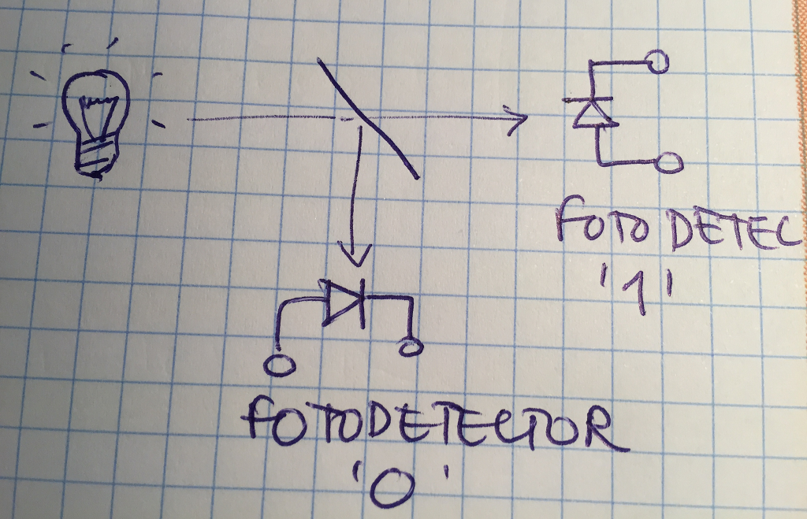
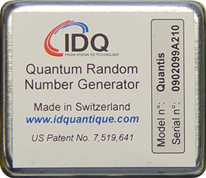
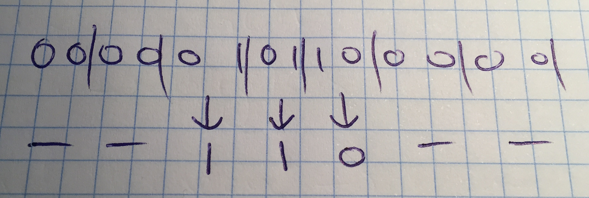
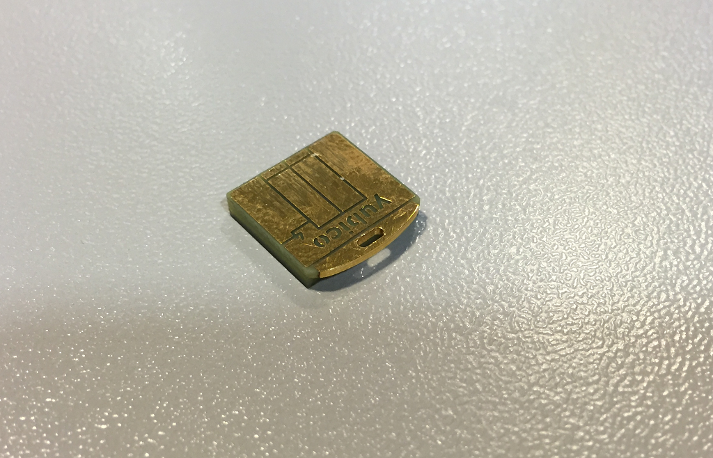
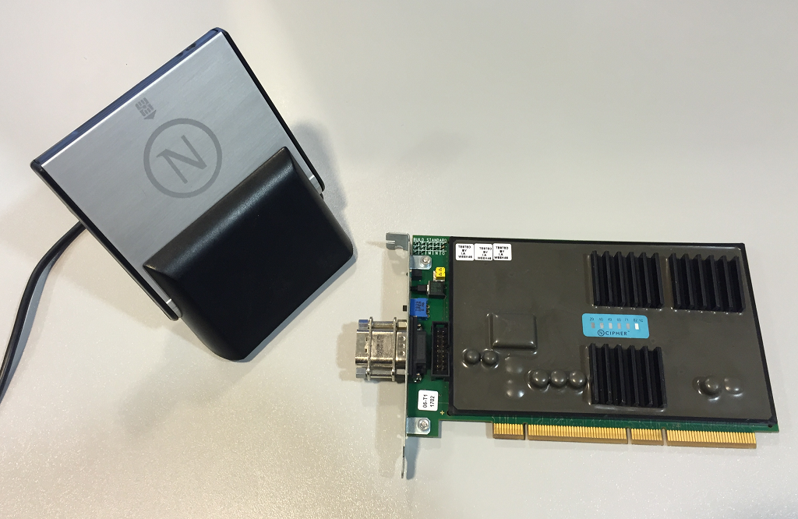
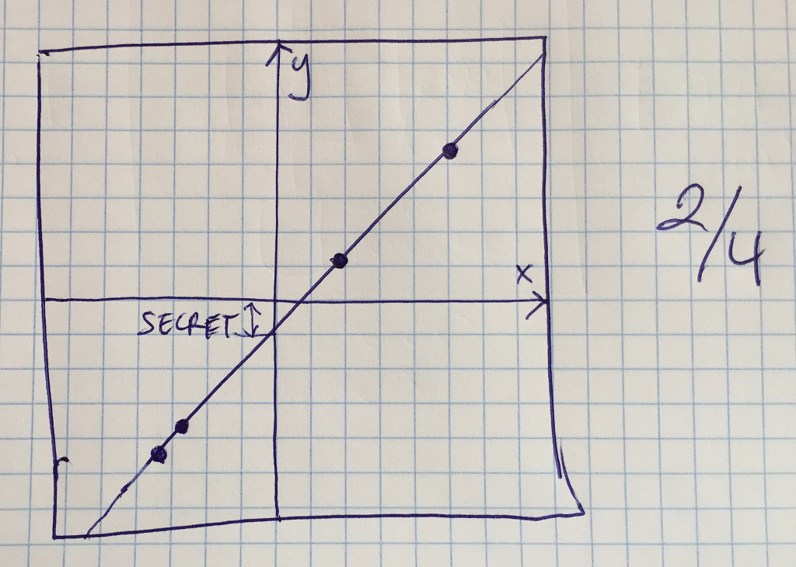

Generación de Números Aleatorios
y HSM

“Curso de Introducción a la Criptografía” by Jordi Íñigo Griera is licensed under a
Creative Commons Attribution 4.0 International License.
Project hosted at github.com/jig/crypto
RNG
o TRNG (True Random Number Generation)
RNG
La generación de números aleatorios (RNG) no se puede implementar con un algoritmo, a diferencia de PRNG que precisamente eran algoritmos con un parámetro o semilla que les permitía generar secuencias impredecibles
(impredecibles a condición de que no se conozca la semilla)
RNG: generación
¿Cómo implementamos un RNG si no es algorítmico?
- Recopilando eventos de entrada (I/O) y acumulando sus parámetros (habitualmente las cifras menos significativas de la hora en ns ó μs)
- Mediante dispositivos especializados (HSM*)
*) HSM: Hardware Secure Module
RNG: fuentes
UI ($\ll 1$ kbps después de reducción)
latencia disco duro ($\ll 1$ kbps después de reducción)
red ($\approx 1$ kbps después de reducción)
funciones de procesador (Intel: $\gg$ Mbps)
RNG: distribución uniforme
Los RNG deben tener unas propiedades
estas propiedades no aplican al número generado (o el bit) en sí, si no a las secuencias de números generados
la secuencia de números (o de bits) debe tener una distribución uniforme
RNG: distribución uniforme
para $n$ bits generados, la probabilidad de una secuencia dada es la misma de la de cualquier otra ($2^{-n}$)
ningún algoritmo puede predecir el seguiente bit conocidos los anteriores (y además, la probabilidad de acierto debe ser $p \approx 1/2$)
RNG: validación
para secuencias suficientemente largas el número de '$1$'s y '$0$'s tiende a ser el mismo
para secuencias suficientemente largas el número de grupos ${00, 01, 10, 11}$ tiende a ser el mismo
etc.
estos tipos de test permiten saber que mi fuente no tiene problemas obvios, pero no es suficiente contra un atacante capaz de modificar conveniente el sistema RNG
RNG: ¿validación?
un RNG sólo se puede considerar seguro si sabemos como lo generamos, y lo generamos de forma segura
RNG: vulnerabilidades
Wikipedia: Random number generator atack
Cloud: random... con poca entropía por poca I/O
Debian (Ubuntu): random... con poca entropía por errores de código
Intel: random... implementación cerrada (...)
PlayStation 3: random... constante
RNG: vulnerabilidades
la criptografía es segura siempre que las hipótesis de funcionamiento se cumplan
la aleatoriedad suficiente de la fuente RNG (o PRNG) es una de ellas

(de xkcd.com/221)
RNG ó PRNG
¿para generar claves hemos de utilizar PRNG o RNG?
podemos usar PRNG a condición que:
- el PRNG se alimente de una semilla RNG
- que el PRNG sea de calidad criptográfica (hacer servir un
AES-CTRcifrando una secuencia constante es una buena opción) - que la semilla tenga suficiente entropía para cubrir el nivel de seguridad
requerido (i.e. $128$ b de entropía para claves de seguridad $128$ b equivalente
como
AES-128óRSA-3072) - y que se mantengan las hipótesis de seguridad: no reutilizar bajo ningún concepto una secuencia de bits
(ja sea RNG ó PRNG) y que las fuentes físicas RNG tengan una entropía bien estimada y acondicionada,
y que los generadoros PRNG sean de buena calidad y cubran un espacio de posibilidades suficiente (i.e.
hace falta usar
AES-256-CTRsi queremos generar claves con $256$ b de seguridad con una única secuencia)
dispositivos
ad-hoc para
RNG
(usados en HSM, SmartCards, algunas CPUs, etc.)
RNG: ruido térmico

una resistencia a temperatura ambiente, tiene electrones libres que se mueven aleatoriamente (carga negativa) y podemos medir el desequilibrio momentáneo con un conversor Analógico/Digital
el conversor dará una secuencia indefinida de bits aleatorios
RNG: ruido térmico
el ruido térmico es el resultado de un fenómeno caótico (no estrictamente aleatorio)
(…)
RNG: indeterminación cuántica

con una fuente (tenue) apuntamos a un espejo semireflectante; dos fotodetectores detectan uno u otro el fotón de forma totalment aleatoria
generador random cuántico

(d'idquantique.com)
¿RNG?
las dos familias de dispositivos generan números aleatorios… pero no uniformes
- RNG térmico: limitado por el ancho de banda (señal)
- RNG cuántico: limitado por la precisión del espejo (semireflectancia del 50,000…%)
Reducción/acondicionado
el flujo en crudo se debe processar siempre, típicamente:
- se descartan las secuencias de '1' y de '0' y sólo se genera un bit random en los cambios
- se aplica una PRF/PRP sobre el flujo anterior (e.g. las CPU's Intel cifran la secuencia con AES-128 y la clav 0x00..00)

esto reduce los bps per "uniformiza" la secuencia
RNG en Linux
en Linux (Ubuntu) tenemos dos fuentes random:
/dev/random: salida RNG basada en I/O ($\approx$ bps)/dev/urandom: unblocking random, salida PRNG enriquecida con/dev/random; ($\approx$ Mbps)
en otros Linux tenemos diferentes combinaciones de /dev/random y con aleatoriedad obtenida de diferentes fuentes
HSM
(Hardware Secure Module)
HSM
(Hardware Secure Module)
las funciones de un HSM son:
- generar claves "de calidad"
- custodiarlas de forma segura
- protegerlas contra uso ilegítimo
- asegurar su correcto uso
- secundarias:
- velocidad (TPS, aceleración TLS)
- volumen (cantidad de claves)
- portabilidad (movilidad física)
- clave compartida (N/M); backup compartido (N/M)
Ejemplos: portabilidad
(fuente
DGP)
Ejemplos: portabilidad
Ejemplos: servidores
Ejemplos: servicio en red

Ejemplos: servicio en red
subsistemas
para implementar las funciones anteriores hace falta:
- generador de claves aleatories (RNG)
- uso controlado verificable
- protección física (no se puede leer el sistema de ficheros, o modificar el software sin "estropear" el HSM)
- protección software (API con control de acceso)
- área de ataque mínima (API "minimalista", hace más improbable los bugs o los security flaws)
FIPS 140-2
los HSM pueden ser certificados según
FIPS 140-2
en diferentes niveles:
este estándar define los requisitos de seguredad que deben seguir los HSM (certificados):
The security requirements cover areas related to the secure design and implementation of a cryptographic module. These areas include cryptographic module specification; cryptographic module ports and interfaces; roles, services, and authentication; finite state model; physical security; operational environment; cryptographic key management; electromagnetic interference/electromagnetic compatibility (EMI/EMC); self-tests; design assurance; and mitigation of other attacks.
FIPS 140-2
- FIPS 140-2 nivel 1: sin contramedidas físicas (son librerías); análisis lógico y de algoritmos
- FIPS 140-2 nivel 2: nivel 1, y debe disponer de contramedidas pasivas para detectar el acceso físico (sellos, evidencias)
- FIPS 140-2 nivel 3: nivel 2, y debe disponer de contramedidas activas para contrarrestar el acceso físico (ceroización) y sólo permite exportar las claves cifradas
- FIPS 140-2 nivel 4: nivel 3, y debe disponer de validación formal del funcionamento
FIPS 140-2
para gestionar claves de usuarios para firma avanzada habitualmente se
requiere FIPS 140-2 nivel 2
para autoridades de validación o de sello de tiempo, habitualmente se
requiere FIPS 140-2 nivel 2
para autoridades de certificación habitualmente se
require FIPS 140-2 nivel 3
PKCS #11
PKCS #11
es una especificación de la API de los HSM en lenguaje C (literalmente un .h)
PKCS: Public Key Cryptographic Standard. Estándares de facto publicados por RSA Labs. Inc. (ahora EMC2 (ahora Dell Technologies));
actualmente la gestión del estándar ha pasado a
OASIS
PKCS #11: operaciones
- login, gestión de sesión
- generación de claves simétricas/asimétricas
- cifrado/descifrado simétrica
- firma/verificación simétrica
- descifrado/firma asimétrica
- operaciones para acuerdo de claves (TLS)
- RNG
- des/ensobrado de claves (key un/wrap)
- gestión de objetos
Partición de Secretos
en claves importantes (e.g. la de una CA raíz) un HSM puede no ser suficiente (¿y si lo roban?)
en estos casos podemos dividir la clave en trozos:
- dividir la cadena de bits en trozos $\Rightarrow$ disminuye la seguridad
- $\oplus$ entre las claves $\Rightarrow$ seguro incondicionalmente, pero frágil
- algoritmo de Shamir $\Rightarrow$ seguro incondicionalmente, y robusto
Partición de secretos
¿lo podemos hacer "por software"?
sí, pero el secreto ha estado "en claro" en la RAM del ordenador por tanto una vez recuperado el secreto su exposición ha aumentado notablemente
pero en HSM es una propiedad habitual
$\oplus$ (XOR) entre los trozos de clave
$n$ custodios se reparten la clave = $\{0,1\}^{\|n\|}$
partición${}_1$ = secuencia aleatoria de $n$ bits
partición${}_2$ = secuencia aleatoria de $n$ bits
…
partición${}_{n-1}$ = secuencia aleatoria de $n$ bits
partición${}_n$ = partición${}_1 \oplus \cdots \oplus$ partición${}_{n-1} \oplus$ clave
Es incondicionalmente seguro (criptográficamente hablando) pero "muy inseguro" desde el punto de vista de robustez funcional:
si se pierde un trozo/partición se pierde la clave sin remedio
Algoritmo de Shamir

permite dividir el secreto en $M$ trozos, de los cuales nos hacen falta $N$ para recuperarlos
Algoritmo de Shamir
definido sobre $(x \in \mathbb{Z}_{p}^{*}, y \in \mathbb{Z}_{p}^{*})$ (no sobre $(x \in \mathbb{R}, y \in \mathbb{R})$ como en el dibujo anterior)
si en lugar de utilizar una recta (polinomio de grado $1$), usamos un polinomio de grado $M-1$ podemos ajustar cuantos trozos se deben recuperar ($M$)
podemos dividirlo en tantos trozos ($N$) como haga falta ($N | N \geq M$)
Algoritmo de Shamir
- es robusto: mientras tengamos $M$ fragmentos (de los $N$ totales), podemos recuperar el secreto
- es seguro: hace falta robar/extorsionar/presionar/… $M$ participantes para obtener el secreto
- es seguro: sobre $\mathbb{Z}_p^*$ es incondicionalmente segura
- es seguro: a condición que se cumpla la hipótesis que el HSM es impenetrable